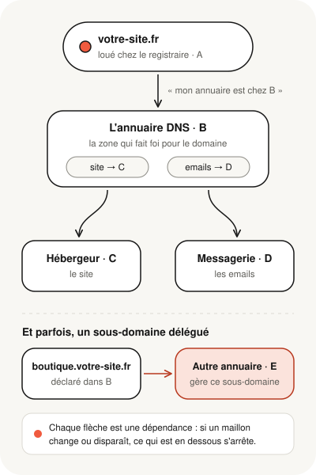

Votre site fonctionne, vos emails arrivent, votre certificat HTTPS se renouvelle. Pourtant, savez-vous précisément qui gère votre nom de domaine, et qui tient l'annuaire qui dirige vos visiteurs et vos emails ? Il est courant que ces rôles soient répartis entre plusieurs prestataires. Cette organisation n'a rien d'anormal, mais elle crée des dépendances invisibles : une configuration peut fonctionner depuis des mois et s'arrêter le jour d'une modification, d'un changement de prestataire ou d'une simple opération administrative.
- Un même domaine peut dépendre de quatre prestataires ou plus : registraire, DNS, hébergement, messagerie.
- Le DNS est l'annuaire qui relie tout : c'est lui qui envoie les visiteurs vers le site et les emails vers la messagerie.
- Les pannes viennent souvent d'une modification faite au mauvais endroit, d'un élément oublié lors d'un changement de prestataire ou d'une zone supprimée trop vite.
- Un DNS qui fonctionne aujourd'hui n'est pas forcément à l'abri : chaque prestataire a ses propres règles de gestion.
- Une simple fiche d'inventaire évite la plupart de ces erreurs.
Un domaine, plusieurs prestataires : c'est normal
Le nom de domaine se loue chez un registraire. L'annuaire DNS peut être tenu par ce même registraire ou par un autre prestataire. Le site est hébergé ailleurs, et les emails peuvent passer par un quatrième service. Nous détaillons le rôle de chacun dans Domaine, DNS, hébergement : qui fait quoi pour votre site ?.

Ce découpage a de vrais avantages : choisir le meilleur service pour chaque besoin, changer d'hébergeur sans toucher à ses emails, confier une partie du domaine à une équipe ou à une plateforme spécialisée. Le risque ne vient pas du découpage lui-même, mais du fait qu'on ne sait plus, au bout de quelque temps, qui gère quoi.
Les sous-domaines peuvent être confiés à quelqu'un d'autre
Un domaine comme votre-site.fr peut avoir des sous-domaines : www.votre-site.fr, boutique.votre-site.fr, app.votre-site.fr. Le plus souvent, tous sont réglés dans la même zone, chez le même prestataire.
Mais on peut aussi confier un sous-domaine à un autre prestataire DNS, qui en gère alors seul les réglages. C'est fréquent pour une boutique en ligne, une application ou un outil externe.
C'est un peu comme un immeuble dont le syndic gère toutes les boîtes aux lettres, sauf celles d'un étage, confiées à un autre gestionnaire. Tout fonctionne, tant que chacun sait qui s'occupe de quoi.
Les situations qui coupent un site ou des emails
« J'ai modifié mes DNS mais rien ne change »
C'est la situation la plus fréquente. Le domaine a été acheté chez un registraire, qui propose une page de réglages DNS. Mais l'annuaire officiel du domaine se trouve chez un autre prestataire. Les modifications faites chez le registraire sont enregistrées… dans une zone que personne ne consulte.
Le seul annuaire qui compte est celui désigné par les serveurs DNS (« nameservers ») déclarés pour le domaine chez le registraire.
Changement de prestataire : le site marche, les emails ne passent plus
Lors d'un changement de prestataire DNS, il faut recréer tous les réglages dans le nouvel annuaire. On pense au site ; on oublie souvent les réglages de la messagerie et ceux qui authentifient les emails. Résultat : le site s'affiche normalement, mais les emails n'arrivent plus, ou finissent en courrier indésirable chez les destinataires.
Certains domaines utilisent aussi une signature de sécurité de l'annuaire (DNSSEC). Si elle est active, un changement de prestataire mal mené peut rendre le domaine injoignable pour une partie des internautes, alors que tous les réglages semblent en place.
Un sous-domaine qui ne répond plus
La zone principale confie un sous-domaine à un autre prestataire, mais celui-ci ne le gère plus : abonnement arrêté, compte fermé, zone jamais créée. Les visiteurs de ce sous-domaine sont envoyés vers un annuaire qui ne sait pas répondre, et le service correspondant devient injoignable, même si le site principal fonctionne.
Une zone supprimée parce qu'elle « ne servait plus »
Une ancienne zone peut sembler inutile, par exemple après un changement de prestataire. Mais elle sert parfois encore un sous-domaine, une vérification de messagerie ou une automatisation. La supprimer sans inventaire préalable coupe ces services d'un coup.
Une alerte du prestataire ignorée
Le DNS lui-même peut être parfaitement réglé, et le prestataire qui l'héberge peut avoir ses propres conditions : vérification que vous contrôlez bien le domaine, étape d'activation à terminer, rattachement d'un sous-domaine à son domaine principal dans votre compte. Si l'une de ces conditions n'est pas remplie, une zone qui fonctionne peut être désactivée ou supprimée selon ses règles, parfois avec les sous-domaines qui en dépendent.
Ces règles varient d'un prestataire à l'autre. D'où l'importance de lire les emails qui annoncent une désactivation, une expiration ou une suppression, même quand tout semble marcher.
Le certificat HTTPS qui ne se renouvelle plus
Certains certificats HTTPS se renouvellent automatiquement en publiant une preuve temporaire dans l'annuaire DNS. Si la zone a été déplacée ou supprimée, ou si l'accès automatique à l'annuaire ne fonctionne plus, le renouvellement échoue sans bruit. Le certificat actuel reste valide jusqu'à sa date d'expiration… puis les visiteurs voient apparaître « Votre connexion n'est pas privée ».
| Ce que vous constatez | Piste la plus probable |
|---|---|
| Une modification DNS n'a aucun effet | Réglage fait dans une zone qui n'est pas l'annuaire officiel |
| Les emails ne passent plus depuis un changement de prestataire | Réglages de messagerie non recopiés dans le nouvel annuaire |
| Un seul sous-domaine est injoignable | Sous-domaine confié à un prestataire qui ne le gère plus |
| Un email annonce la désactivation d'une zone | Condition du prestataire non remplie : à traiter avant l'échéance |
| Le cadenas disparaît sans raison apparente | Renouvellement automatique du certificat bloqué |
Ce que vous pouvez vérifier sans risque
- Où est loué votre domaine. Cherchez la facture ou l'email de renouvellement : le nom du registraire y figure.
- Qui tient l'annuaire. Dans l'espace client du registraire, la rubrique « serveurs DNS » ou « nameservers » indique le prestataire dont l'annuaire fait foi. C'est chez lui, et seulement chez lui, que les réglages doivent être modifiés.
- Les emails de vos prestataires. Une alerte d'expiration, de vérification ou de suppression mérite toujours d'être lue, même quand tout fonctionne.
- Votre fiche d'inventaire. Remplissez-la une fois, et gardez-la à jour :
| Élément | À noter |
|---|---|
| Nom de domaine | Registraire, date de renouvellement, compte utilisé |
| Annuaire DNS | Prestataire, compte utilisé |
| Sous-domaines | Lesquels, à quoi ils servent, qui les gère |
| Site | Hébergeur, compte utilisé |
| Emails | Fournisseur de messagerie, compte utilisé |
| Certificat HTTPS | Qui le fournit, renouvellement automatique ou non |
Ne notez jamais de mot de passe dans cette fiche : indiquez seulement quel compte permet d'accéder à chaque service.
Ce qu'implique un changement de prestataire
Changer d'annuaire DNS, d'hébergeur ou de messagerie est une opération qui touche plusieurs services à la fois. Elle se prépare : inventaire complet des réglages existants, recréation de la zone chez le nouveau prestataire avant toute bascule, attention particulière à la messagerie et à la signature DNSSEC, ancienne zone conservée pendant la période de transition, puis vérification de chaque service, sous-domaines compris. C'est ce travail de préparation, plus que la bascule elle-même, qui évite les coupures.
Un domaine réparti entre plusieurs prestataires fonctionne très bien, tant que l'on sait qui gère quoi. Trois questions résument la solidité de votre configuration : fonctionne-t-elle aujourd'hui ? Restera-t-elle active selon les règles de chaque prestataire ? Saurait-on la reconstruire en cas de problème ?